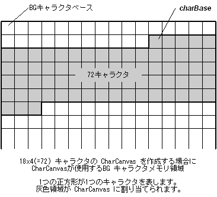

#include <nnsys/g2d/g2d_CharCanvas.h>
void NNS_G2dCharCanvasInitForBG(
NNSG2dCharCanvas* pCC,
void* charBase,
int areaWidth,
int areaHeight,
NNSG2dColorMode colorMode
);| pCC | [IN] Pointer to CharCanvas |
| charBase | [IN] Pointer to starting point of characters assigned to CharCanvas. Must have 4-byte alignment. |
| areaWidth | [IN] Number of characters in horizontal direction assigned to CharCanvas |
| areaHeight | [IN] Number of characters in vertical direction assigned to CharCanvas |
| colorMode | [IN] Color mode of target BG |
None.
Initializes the NNSG2dCharCanvas structure in order to build CharCanvas on Character BG screen.
With this function, the CharCanvas gets built with n number of characters, assigned starting from charBase, where n = areaWidth * areaHeight. Note that the maximum number of characters that can be assigned to CharCanvas is 256 for an Affine BG, and 1024 for Text BG and Affine Extended BG.

colorMode takes either of these values:
| NNS_G2D_CHARA_COLORMODE_16 | Use 16-color characters |
| NNS_G2D_CHARA_COLORMODE_256 | Use 256-color characters |
const int width = 24;
const int height = 8;
const int offset = 0x40;
NNSG2dCharCanvas cc;
GXCharFmt16* pCharBase = (GXCharFmt16*)G2_GetBG0CharPtr();
// Build CharCanvas using main BG0 characters.
NNS_G2dCharCanvasInitForBG(
&cc, //
pCharBase + offset // Build CharCanvas using (width * height) number of
width, // characters.
The reference point is the character
height, // that is "offset" away from the character base.
NNS_G2D_CHARA_COLORMODE_16 //
);
05/25/2005 Initial version.